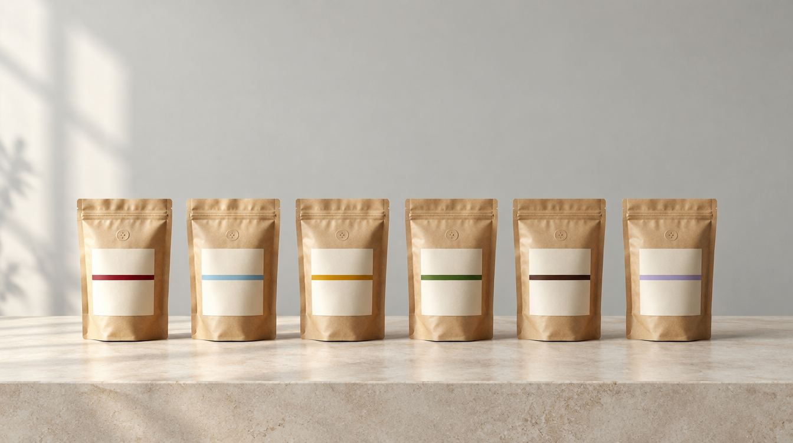

Colombia · Aipecito
Colombia Huila
Chocolate, avellana y caña de azúcar, con un final cítrico que limpia el paladar. Equilibrado en cualquier método.
- Chocolate
- Avellana
- Caña de azúcar
- Final cítrico
11,90 € / 250 g47,60 €/kg
Tienda
Café de especialidad en bolsas de 250 g, en grano o molido para tu método. Elige por sabor, por cafetera o deja que te recomendemos.

En 4 toques
Responde y te decimos cuál probar primero.
Nuestros cafés
Todos en bolsa kraft de 250 g con válvula. Puedes cambiar la molienda en el carrito.
Colombia · Aipecito
Chocolate, avellana y caña de azúcar, con un final cítrico que limpia el paladar. Equilibrado en cualquier método.
Guatemala · Huehuetenango
Almendra, cacao y manzana roja, con acidez suave y cuerpo equilibrado. Un café que gusta a todos.
India · Mudigere
Banana madura, uva y macadamia, con un toque de pomelo y final a nuez. Cultivado bajo sombra.
Colombia · Isnos
Caramelo, fresa y mandarina, con acidez viva y cuerpo ligero. Con certificación ecológica.
Colombia e India · Blend
Chocolate negro, especias y malta tostada, con mucho cuerpo y una crema generosa. 80 % arábica de Colombia y 20 % robusta de la India.
Colombia · Aipecito
Frutas dulces, chocolate y almendra, con un final a arándanos. Descafeinado sin renunciar al sabor.
Ningún café cumple todos los filtros.
Para comprar necesitas JavaScript activado. También puedes pedir por WhatsApp.
Mapa de sabor
A la derecha, cafés más vivos y frutales. Arriba, más cuerpo y crema. Toca un punto para ver el café.
Posiciones orientativas, a partir de las notas de cata de cada lote.
Calculadora
Pon cuántas tazas tomas y con qué método. Te decimos cuántas bolsas pedir para no quedarte sin café.
Tienda
Pedidos, envíos y moliendas.
¿Otra duda? Escríbenos →Añade tus cafés al carrito, escribe tu código postal y paga con tarjeta de forma segura con Stripe. También puedes pedir por WhatsApp y te confirmamos disponibilidad, envío y pago.
En grano se conserva fresco más tiempo. Si eliges molido, lo molemos al hacer tu pedido con la molienda de tu método.
Envío gratis a partir de 35 €. Por debajo de 35 €, el envío cuesta 4,95 €. Hoy enviamos a la España peninsular.
Sí. Para volúmenes mayores tenemos café tostado para negocios.